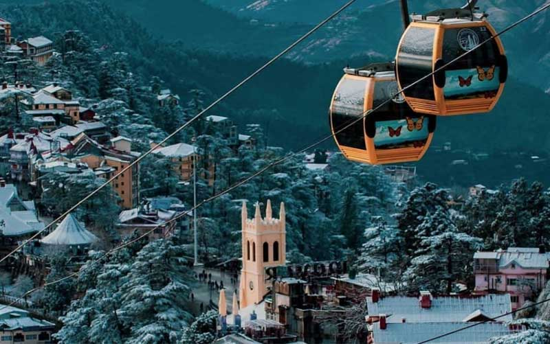
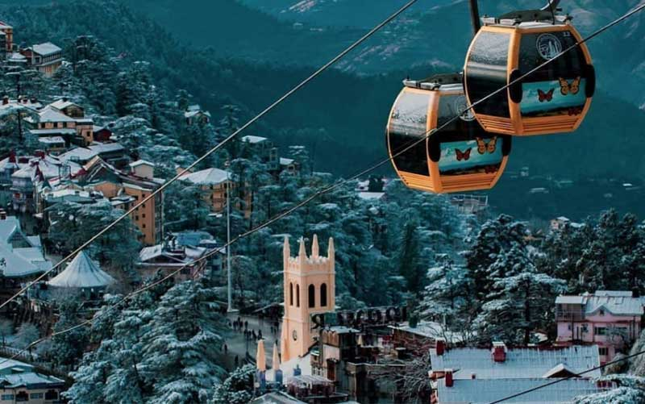
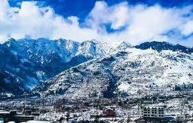
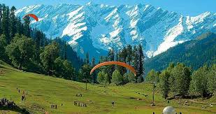
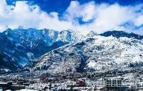
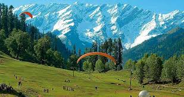
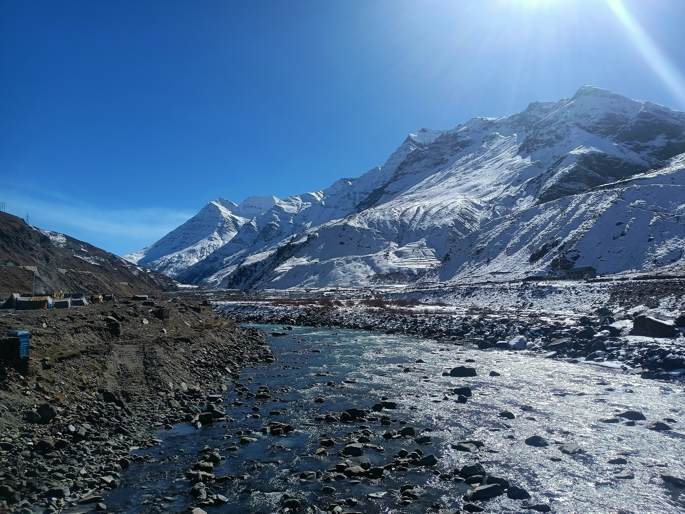
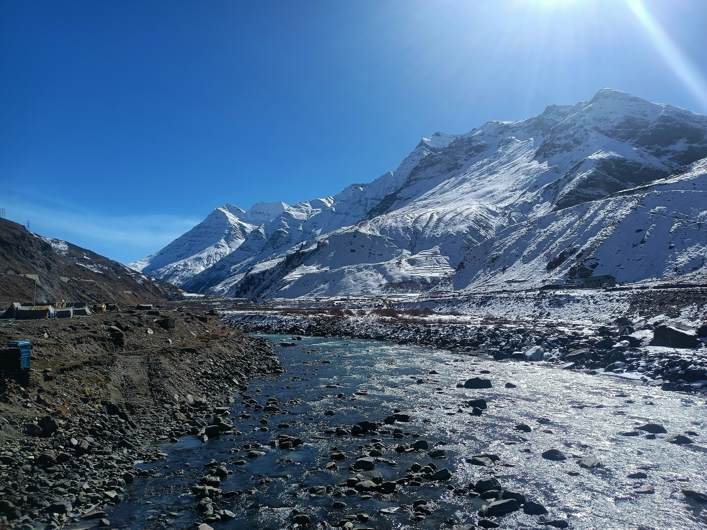

Highlights
- The Mall Road: This bustling street is the heart of Shimla, lined with shops, cafes, and restaurants. It’s perfect for leisurely strolls and enjoying the scenic views.
- Jakhoo Temple: Situated on Jakhoo Hill, this temple is dedicated to Lord Hanuman and offers panoramic views of the surrounding mountains. The walk to the temple is picturesque, and you might even spot some monkeys along the way.
- Christ Church: An iconic landmark in Shimla, this beautiful neo-Gothic church features stunning stained-glass windows and a peaceful ambiance. It's located near the Mall Road, making it an easy stop during your visit.
- Solang Valley: Known for adventure sports, Solang Valley offers activities like skiing, paragliding, and zorbing in winter, while in summer, it’s great for trekking and horse riding.
- Hadimba Temple: Surrounded by cedar forests, this ancient temple dedicated to Goddess Hadimba is known for its unique architecture and serene atmosphere. The temple is set in a picturesque location, adding to its charm
- Rohtang pass: A must-visit for breathtaking views and snow activities, Rohtang Pass is a high mountain pass that offers stunning landscapes and a chance to enjoy snow even in summer.
- Old Manali: This quaint village is known for its laid-back vibe, cafes, and stunning views. It's a great place to relax, explore local culture, and enjoy the beautiful landscapes.
 

 




 

Thrilling Manali and Shimla
Day 1: Arrival in Manali
- Morning: Arrive in Manali. Check into your hotel and freshen up.
- Afternoon: Explore Mall Road, visit local shops, and enjoy lunch at a café
- Evening: Visit Hadimba Temple, set in a beautiful cedar forest, and take a leisurely walk in the nearby gardens.
Day 2: Manali Sightseeing
- Morning: After breakfast, visit Solang Valley for adventure activities like paragliding, zorbing, or skiing (depending on the season).
- Afternoon: Head to Rohtang Pass (if accessible; permits required). Enjoy snow activities and stunning mountain views.
- Evening: Return to Manali and have dinner at a local restaurant.
Day 3: Manali to Kullu
- Morning: After breakfast, check out and head to Kullu (approximately 1.5 hours). Visit the Kullu Valley and explore local temples, such as the Raghunath Temple.
- Afternoon: Engage in activities like river rafting or trekking in the scenic surroundings.
- Evening: Check into your hotel in Kullu and enjoy dinner.
Day 4: Kullu to Shimla
- Morning: Check out from your hotel and depart for Shimla (approximately 7-8 hours by road). Enjoy the scenic drive through the mountains.
- Afternoon: Arrive in Shimla, check into your hotel, and relax.
- Evening: Explore Mall Road in Manali for shopping and local cuisine.
Day 5: Shimla Sightseeing
- Morning: After breakfast, visit Jakhoo Temple for panoramic views of Shimla. You can hike or take a taxi.
- Afternoon: Explore Kufri, located about 16 km from Shimla. Enjoy activities like horse riding or visit Kufri Fun World amusement park.
- Evening: Return to Shimla and have dinner at a local restaurant.
Day 6: More of Shimla
- Morning: Visit the Viceregal Lodge and its gardens to learn about the history of British India.
- Afternoon: Explore Lakkar Bazaar, famous for wooden crafts and souvenirs. Try some local snacks.
- Evening: Spend a relaxed evening at your hotel or take a stroll on the Ridge, enjoying the views and atmosphere.
Day 7: Departure
- Morning: Enjoy breakfast at your hotel. If time permits, do some last-minute shopping or visit any attractions you may have missed.
- Afternoon: Check out from your hotel and begin your journey back home or to your next destination.